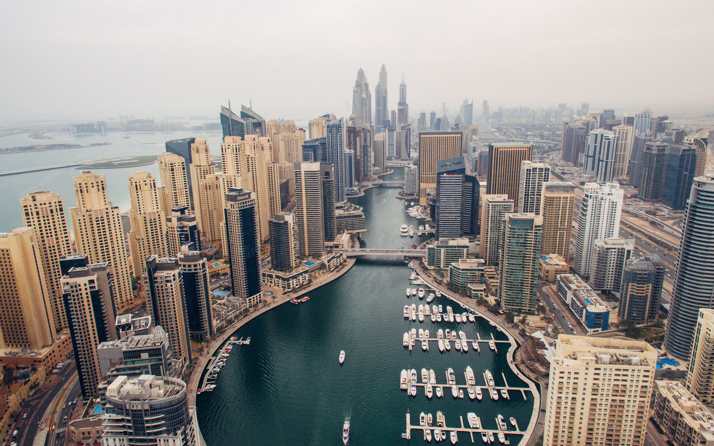
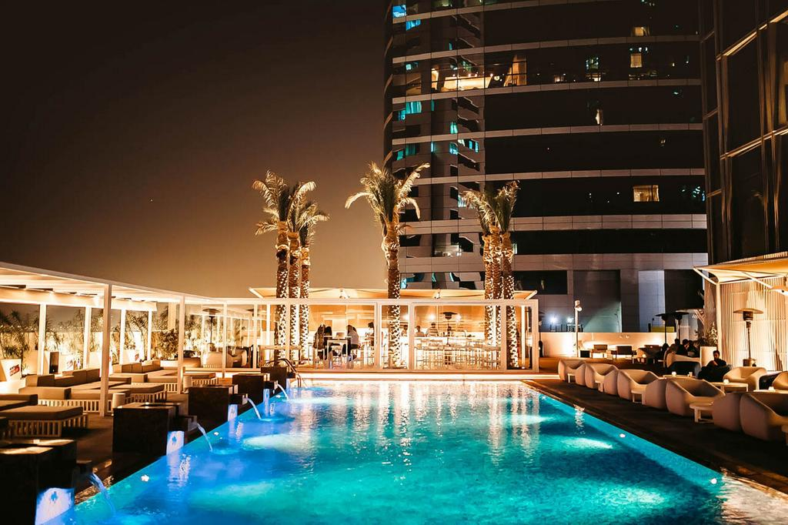

DREAM CITIES
Accueil
Acceuil
Bolivie
Bora-Bora
Chilie
Dubai
vietnam
Taj Mahal
Saint-Louis
Dubai
Présentation de Dubai
Un voyage différent ou juste une escale en route pour l’Asie ? N’importe quelle excuse est bonne
pour visiter Dubaï, une ville en constante expansion qui, grâce à une mentalité ouverte, souhaite
faire connaître au reste du monde la culture arabe et offrir les meilleurs divertissements pour tous les
âges.Dubaï entend devenir à moyen terme l’une des destinations touristiques les plus importantes au monde,
construite au beau milieu du désert.Dubaï est composée d’une multitude de projets pharaoniques. Si vous souhaitez
en savoir plus sur cette ville et sa société, vous pouvez commencer par voir un peu plus sur ses quartiers et ses
visites les plus importantes.
 